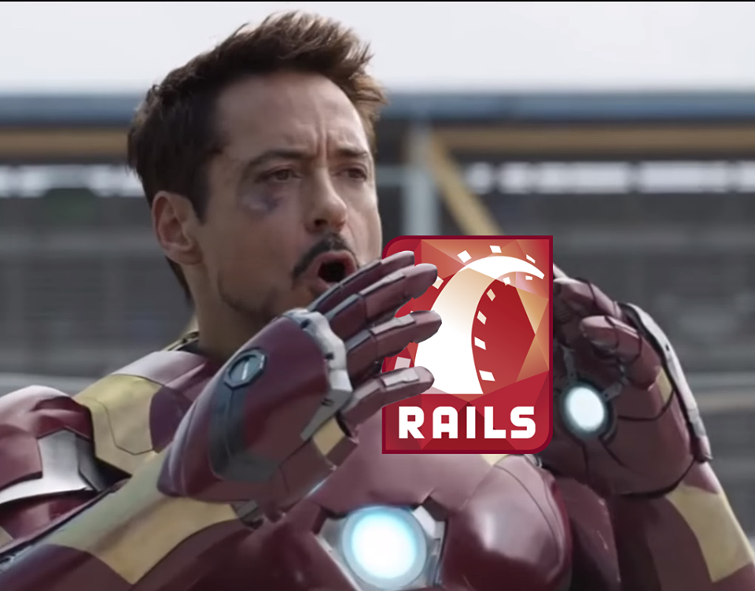

Bem vindos!

GDG Duque de Caxias
Usando Rails #1
Apresentação criada por Igor Felipe e Gabriel Lima
Disponível online
Rails
O que é?
Ruby on Rails é um projeto de código aberto escrito na linguagem de programação Ruby. As aplicações criadas utilizando o framework Rails são desenvolvidas com base no padrão de arquitetura MVC (Model-View-Controller).
Por que eu deveria usar?
- Agilidade
- Hard modelin' simple codin'
Agilidade
O Rails permite que você implemente um projeto MVC de forma bastante rápida sem se preocupar com problemas de: requisições AJAX, escrever SQL ou então ficar calculando tempo para fazer CRUD's básicos.
Bruxaria ?
"Um exemplo clássico da importância de conhecer mais a fundo a linguagem Ruby está em desvendar a "magia negra" por trás do Rails. Conceitos como metaprogramação, onde código é criado dinamicamente, são essenciais para o entendimento de qualquer sistema desenvolvido em Rails."
Caelum, APOSTILA RUBY ON RAILS
Preciso saber Ruby?
Hard modelin' simple codin'
Você é um daqueles que adora escrever códigos imensos de SQL?
SQL = "INSERT INTO clientes (nome, data_nascimento, logradouro, bairro, cidade, uf, cpf, rg) VALUES ('$nome', '$data_nascimento', '$logradouro', '$bairro', '$cidade', '$uf', '$cpf', '$rg')"
(Sério, só de escrever o exemplo pra vocês, eu dormi 3x)
E isso é apenas um comando SQL de INSERT, imagina um de UPDATE
Agora imaginem que toda vez que eu tiver que adicionar um campo na tabela, eu tenho que ir alterar o código ?
Alterar o código, esquecer a vírgula, as aspas...
O Rails torna isso mais fácil pra mim! Eu só tenho que escrever isso:
@cliente = Cliente.new(params[:cliente])
@cliente.save
Na prática!

Do yourself

Participe
de nossa comunidade do Google+, grupo no Google e GitHub!
Participação em comunidades e projetos open source costuma ser bom para o currículo além de você aprender muito =]

That's all folks!
Acessem: GDGDuqueDeCaxias.GitHub.io
Apresentação adaptada com reveal.js. Código disponível no GitHub.